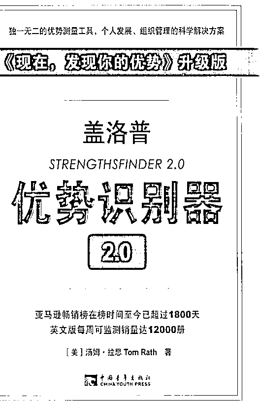

来源：https://i0izh5b4v98.feishu.cn/docx/NW2UdE0iGod0EzxqidIcekmjnRe
原书为《盖洛普优势识别器2.0》，奈何真的太晦涩难懂了。

于是我产生了一个想法，通过AI转化为“大白话版”，于是有了本文件。
感谢这个时代！
顺便提一句：如果要原书的PDF版或doc版，请到本人公众号“从零实现人生富足”回复“盖洛普识别”（文件太大）。一切本着免费利他的原则，不因此产生任何盈利。
使用方法很简单，测出你的前十优势才干后，直接找到相应的主题来看就行。
其实还有更好的方法，可以轻松借助AI的力量读懂盖洛普优势才干报告，可以看我文章[AI时代我们如何打造学习力]。
以下为34个优势才干的解读、行动建议和关键词：
第一个主题是“成就”，这个主题说明你天生就有一种追求成功的驱动力。你每天都像从零开始一样，必须看到实实在在的成果才会感到满足。这种追求成就的渴望可能没有逻辑，但总是驱使你不断前进，即使有时候可能会让你感到不满足。你需要学会和这种不满足感相处，因为它能给你带来动力，让你长时间工作而不觉得疲倦。
行动建议：
关键词：追求成功、动力、不满足感、自我激励、合作、目标设定、质量保证、自我评估、未来展望、工作质量、团队合作。
第二个主题是“行动”，这个主题表明你是一个行动派，喜欢把想法付诸实践。你不喜欢空谈，更看重实际行动。一旦做出决定，你就会立即行动起来，即使其他人还在犹豫不决。你认为只有通过行动，才能实现目标和成果。你相信最好的学习方式是通过实践，即使这意味着要面对失败和挑战。
行动建议：
关键词：行动导向、决策、实践、学习、挑战、合作、影响力、理由准备。
第三个主题是“适应”，这个主题意味着你能够灵活应对变化。你不喜欢一成不变的计划，而是喜欢根据当前的情况做出反应。你能够迅速适应新的要求或意外的曲折，即使这意味着要改变原有的计划。你是一个能够随机应变的人，即使在压力下也能保持冷静和高效。
行动建议：
关键词：灵活性、适应变化、随机应变、压力下保持冷静、快速反应、短期任务、保持良好心态。
第四个主题是“分析”，这个主题说明你具有挑战和分析事物的天赋。你喜欢用数据和逻辑来验证观点，寻找模式和关联。你的问题总是深入到事物的本质，试图揭示背后的原理。你相信只有经过严谨分析，才能得出有意义的结论，这种追求精确和逻辑的态度使你在解决问题时显得特别有条理。
行动建议：
关键词：挑战、分析、数据、逻辑、模式、关联、精确、应用、合作、逻辑依据、数据模式。
第五个主题是“统筹”，这个主题表明你擅长管理和协调各种资源以达到最佳效果。你喜欢控制变量，寻找最佳组合，以实现目标。你能够在复杂的环境中灵活调整策略，找到新的解决方案。你的这种能力让你在面对变化和挑战时显得游刃有余。
行动建议：
关键词：管理、协调、控制变量、灵活调整、最佳组合、复杂环境、组织活动、解释方法、灵活组织、团队合作。
第六个主题是“信仰”，这个主题意味着你拥有坚定的价值观和信念。这些核心价值指导你的行为和决策，让你在面对诱惑和干扰时保持恒定。你的信仰让你在工作和人际关系中寻求意义，并且你倾向于选择那些与你的价值观相符的工作。
行动建议：
关键词：价值观、信念、行为指导、恒定、工作意义、个人生活、表达价值观、共同价值观、信仰体系。
第七个主题是“统率”，这个主题表明你具有强烈的领导倾向。你喜欢明确地表达自己的观点，并希望影响他人。你不怕对立，甚至认为这是解决问题的第一步。你推动他人承担风险，有时甚至会逼迫他们。人们往往愿意跟随那些立场鲜明的领导者。
行动建议：
关键词：领导倾向、表达观点、对立、风险承担、危机管理、领导委员会、说服他人。
第八个主题是“沟通”，这个主题说明你善于用言语表达和交流。你能够将枯燥的概念变得生动有趣，吸引人们的注意力。你希望人们记住你传达的信息，因此你会用故事、案例和比喻来讲述。你的沟通能力使你在教育、销售、市场营销等领域发挥出色。
行动建议：
关键词：言语表达、吸引注意力、故事讲述、听众反应、即兴演讲、沟通技巧、实质内容、社交活动。
第九个主题是“竞争”，这个主题表明你天生喜欢竞争，并且通过比较和挑战来衡量自己的成就。你的动力来自于与他人竞争，并且享受胜利带来的满足感。你相信通过竞争，可以推动自己不断进步。
行动建议：
关键词：竞争、比较、成就、挑战、胜利、庆祝、失败策略、竞争性语言。
第十个主题是“关联”，这个主题意味着你认为万事万物都是相互关联的。你相信我们都是宏观世界的一部分，这种关联感让你对人和事都充满同情和理解。你成为不同文化和背景之间的桥梁。
行动建议：
关键词：关联、宏观世界、同情、理解、文化桥梁、协商、使命、沟通合作。
第十一个主题是“公平”，这个主题表示你非常重视公平和正义。你相信每个人都应该受到平等对待，无论他们的社会地位如何。你反对任何形式的不公平，并且愿意站出来维护公平原则。
行动建议：
关键词：公平原则、主持公道、荣誉制度、挑战规则、业绩关注、备忘录、支持变化、现实主义、表彰团队、群体数据分析、执行规章。
第十二个主题是“回顾”，这个主题表明你倾向于回顾过去，从中寻找答案和指导。你认为了解历史和前因后果对于理解现状和未来至关重要。
行动建议：
关键词：回顾过去、历史、前因后果、组织文化、前瞻、战略、接受改变、成功事例、案例思考、了解背景。
第十三个主题是“审慎”，这个主题意味着你是一个谨慎和警觉的人。你深知世事难测，因此你总是小心翼翼地评估风险和可能的后果。你避免冲动行为，而是通过深思熟虑来做出决策。
行动建议：
关键词：谨慎、风险评估、深思熟虑、保守决策、隐私、合作伙伴。
第十四个主题是“伯乐”，这个主题表明你有发现和培养他人潜能的天赋。你关注每个人的成长和进步，乐于帮助他们实现潜力。你寻找机会挑战他们，帮助他们成长。
行动建议：
关键词：发现潜能、成长、挑战、导师、个别天赋、表扬、进步。
第十五个主题是“纪律”，这个主题表示你对秩序和规律有着强烈的需求。你喜欢有计划和组织，并且通过建立常规和时间表来实现目标。你讨厌意外和失误，追求精确和效率。
行动建议：
关键词：秩序、规律、计划、组织、精确、效率。
第十六个主题是“体谅”，这个主题表明你能够深刻理解他人的感受和立场。你善于设身处地地考虑问题，能够察觉他人的需求和情感。你的这种能力让你在人际关系中显得特别有同理心。
行动建议：
关键词：理解他人、同理心、困难时期、知己导师、工作完成。
第十七个主题是“专注”，这个主题说明你需要一个明确的目标来指导你的行动。你本能地过滤掉那些与你的目标无关的事情，这使你能够更高效地工作。你的专注力让你在团队中成为一个宝贵的成员，能够确保团队保持正确的方向。
行动建议：
关键词：明确目标、过滤无关事务、团队方向、个人生活目标、时间管理。
第十八个主题是“前瞻”，这个主题表明你对未来充满憧憬，并且能够看到未来的可能性。你是一个梦想家，能够激发他人对美好未来的期待。你的思维不受现状的限制，总是寻找新的机会和创新的方法。
行动建议：
关键词：未来憧憬、梦想家、新机会、创新方法、愿景分享。
第十九个主题是“和谐”，这个主题意味着你追求和平与一致。你努力避免冲突，寻求共识。你认为团队的和谐是成功的关键，因此你总是努力维护团队的和谐氛围。
行动建议：
关键词：和平追求、避免冲突、共识、和谐氛围、解决冲突。
第二十个主题是“理念”，这个主题表明你对理念和概念有着浓厚的兴趣。你喜欢探索事物的本质，寻找事物之间的联系。你的思维活跃，总是试图从不同的角度看待问题，这让你能够提出创新的观点和解决方案。
行动建议：
关键词：理念探索、概念联系、创新观点、思维活跃、设计才干。
第二十一个主题是“包容”，这个主题意味着你乐于接纳和理解不同的观点和人。你相信每个人都是独特的，并且尊重这种多样性。你努力创建一个包容的环境，让每个人都感到被接纳和尊重。
行动建议：
关键词：接纳多样性、代表他人、共同点价值、不和谐声音、集体活动。
第二十二个主题是“个别”，这个主题说明你对每个人的独特性有着深刻的理解和欣赏。你关注个人差异，并且本能地观察每个人的风格、动机、思维方法和交际方式。你能够因材施教，使每个人发挥其最大的潜力。
行动建议：
关键词：独特性、个人差异、多元、因材施教、团队长处。
第二十三个主题是“搜集”，这个主题表明你对收集信息和资源有着浓厚的兴趣。你喜欢积累各种信息，无论是词汇、事实、书籍还是实物。你对世界的好奇心驱使你不断学习和探索。
行动建议：
关键词：信息收集、好奇心、资源积累、知识分享、信息体系。
第二十四个主题是“思维”，这个主题表明你喜欢思考和反思。你喜欢深入探讨问题，无论是解决难题、酝酿创意还是理解他人的感受。你是一个喜欢独处的人，因为这样你才能沉思冥想，你的内向性格使你成为自己最好的伴侣。
行动建议：
关键词：思考、反思、独处、智力思辨、思想挑战。
第二十五个主题是“学习”，这个主题说明你热爱学习的过程。你被从无知到熟练的过程所吸引，无论是新技能的掌握还是知识的积累。你对学习的激情使你能够在不断变化的环境中保持适应性。
行动建议：
关键词：学习过程、适应性、提炼知识、技术核心能力、学习条件。
第二十六个主题是“完美”，这个主题表明你对卓越有着不懈的追求。你致力于将事物做到最好，无论是个人的工作表现还是团队的成果。你关注细节，追求完美，这使得你的工作和成果总是超出平均水平。
行动建议：
关键词：卓越追求、专注天赋、成功研究、帮助他人、事业之路。
第二十七个主题是“积极”，这个主题意味着你拥有一种乐观和积极的态度。你的热情和活力能够感染他人，使环境变得更加积极和有活力。你相信生活是美好的，工作是有趣的，即使面对挫折也不应失去幽默感。
行动建议：
关键词：乐观态度、热情活力、表彰活动、积极环境、工作动力。
第二十八个主题是“责任”，这个主题表明你对自己的承诺和责任有着强烈的认同感。一旦你做出承诺，无论大小，你都会全力以赴地去履行。你的名声和信誉建立在这种高度的责任感之上，你不愿意因为任何原因而失信于人。
行动建议：
关键词：承诺履行、责任感、信誉、主动承担、说“不”。
第二十九个主题是“排难”，这个主题说明你具有解决问题的天赋。面对挑战和困难时，你不仅不会感到沮丧，反而会感到兴奋。你喜欢分析问题、找到解决方案，并享受将问题解决的过程。
行动建议：
关键词：解决问题、挑战、兴奋、技能提升、支持与改进。
第三十个主题是“自信”，这个主题表明你对自己有着坚定的信念。你相信自己的能力和判断，这种自信让你在面对决策和挑战时显得果断和坚定。你不会轻易被他人的观点所左右，而是依赖自己的直觉和判断来指导行动。
行动建议：
关键词：坚定信念、果断、直觉、搭档、自主决策。
第三十一个主题是“追求”，这个主题意味着你渴望在他人眼中显得卓越。你希望获得真正的认可，希望自己的意见受到重视。你追求卓越，希望别人了解和赞赏你的独特优势。
行动建议：
关键词：卓越、认可、梦想、进步、瞩目。
第三十二个主题是“战略”，这个主题表明你具有独特的思维方式，能够透过日常琐事看到前进的捷径。你能够预见未来，制定计划，并为可能出现的各种情况做好准备。你的这种能力让你在面对复杂问题时，能够保持冷静和有条不紊。
行动建议：
关键词：独特思维、预见未来、计划、团队、早期参与。
第三个十三个主题是“取悦”，这个主题意味着你喜欢结识新人并赢得他们的好感。你擅长建立人际关系，无论是在社交场合还是在工作场所。你的热情和友好让你能够轻松地与他人建立联系。
行动建议：
关键词：结识新人、人际关系、社交场合、人脉网络、市场联系。
第三十四个主题是“交往”，这个主题表明你重视与他人的亲密关系。你喜欢与人建立深厚的联系，了解他们的情感、目标、恐惧和梦想。你愿意分享自己的感受，并且希望他人也能以同样的方式了解你。这种对真诚关系的渴望让你愿意承担风险，因为对你来说，只有真诚的关系才有价值。
行动建议：
关键词：亲密关系、真诚、信任、分享、团队联系。
请注意，这是《盖洛普优势识别器2.0》中提到的34个主题及行动建议的最后一个。如果你需要更多信息或者有其他问题，请告诉我。